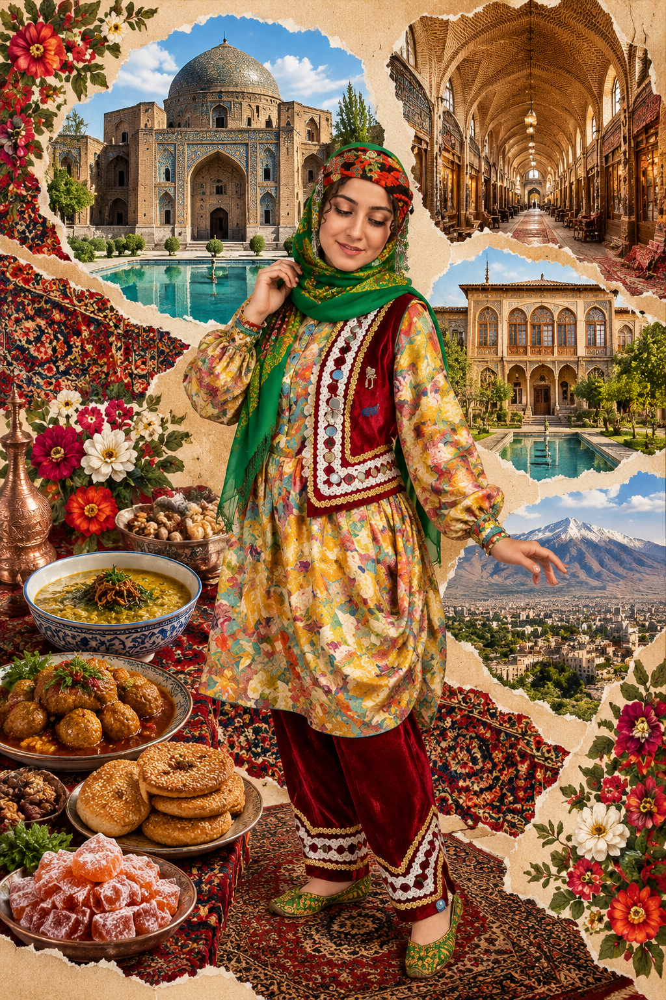
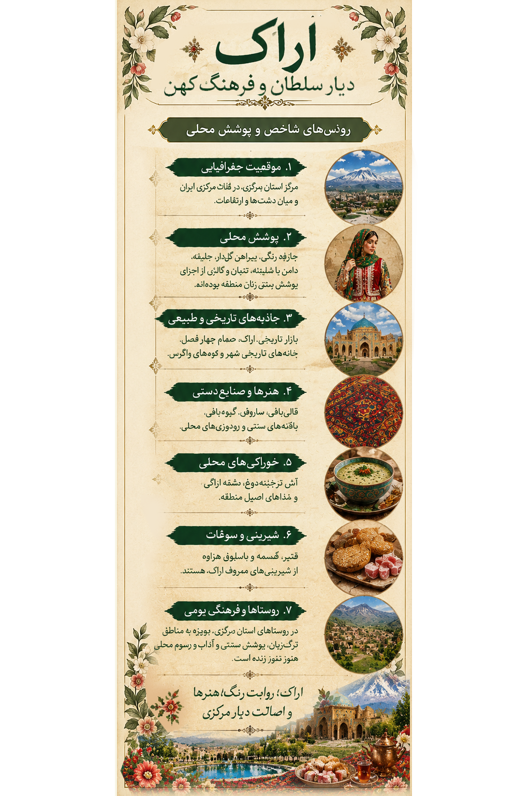

۱. تصویر اراک؛ روایت یک سرزمین1. Arak in Art: A Land's Story
در این اثر، پوشش الهامگرفته از فرهنگ بومی استان مرکزی با نشانههایی از طبیعت، معماری تاریخی و هنرهای دستی منطقه همراه شده است. رنگها و نقشها، پیوند میان زندگی مردم، هنر دست و خاطره فرهنگی را روایت میکنند.This artwork combines dress inspired by local culture in Markazi Province with references to nature, historic architecture and regional crafts. Its colors and patterns tell a story of community, handmade art and cultural memory.

اثر هنری اراک از مجموعه «ایران، هزار رنگ»The Arak artwork from “Iran, A Thousand Colors”
این تصویر، بازآفرینی هنری مجموعه است؛ توضیحات این صفحه برای معرفی فرهنگی و تاریخی استان مرکزی ارائه شدهاند.This image is an artistic interpretation created for the collection. The text provides cultural and historical context about Markazi Province.
۲. پوشش زنان استان مرکزی؛ تنوع در نقش و رنگ2. Women's Dress in Markazi: Diversity in Pattern and Color
پوشاک سنتی زنان استان مرکزی یکدست و یکسان نبوده است. نوع لباس، روسری، شلوار، پیشبند و دیگر اجزای پوشش، بسته به روستا، دوره تاریخی، سبک زندگی و مناسبتها تفاوت داشتهاند. به همین دلیل، بهتر است پوشش هر ناحیه با تکیه بر شواهد محلی بررسی شود.Traditional women's clothing in Markazi Province has not followed one uniform pattern. Garments, headscarves, trousers, aprons and other elements have varied by village, historical period, lifestyle and occasion. Each area's dress should therefore be studied through local evidence.

لیبل اختصاصی اراک؛ راهنمای تصویری پوشش و فرهنگ منطقهArak exhibition label: a visual guide to regional dress and culture
پوشاک روستاییRural Clothing
در روستاهای استان مرکزی، پوشاک روزمره و لباسهای ویژه مراسم ممکن است از نظر جنس پارچه، رنگ، شیوه دوخت و پوشش سر تفاوت داشته باشند. برای نسبت دادن نام یک لباس به روستایی مشخص، مراجعه به عکسهای مستند، پژوهشهای مردمشناسی و روایت زنان همان منطقه اهمیت دارد.In villages across Markazi Province, everyday clothing and ceremonial garments may differ in fabric, color, tailoring and head coverings. Documented photographs, ethnographic research and accounts from local women are important when identifying a garment with a specific village.
هنر دست و پوشاکHandicrafts and Clothing
هنرهای دستی منطقه، از بافت فرش تا دوخت و تزئینات پارچهای، بخشی از میراث مهارتی مردم هستند. هر نقش میتواند بازتابی از سلیقه، تجربه و محیط زندگی سازندگانش باشد.Regional handicrafts, from carpet weaving to textile decoration, form part of the community's practical heritage. Patterns can reflect the taste, experience and surroundings of their makers.
۳. شهرها و نواحی استان مرکزی3. Cities and Regions of Markazi Province
استان مرکزی مجموعهای از شهرها و روستاهای گوناگون است. محصولات کشاورزی، صنایعدستی، معماری و شیوههای زندگی محلی، هر ناحیه را با ویژگیهای خاص خود معرفی میکنند.Markazi Province includes a variety of cities and villages. Agricultural products, handicrafts, architecture and local ways of life give each area its own character.
اراکArak
مرکز استان و شهری با بازار تاریخی، خانههای قدیمی و پیشینه صنایعدستی و دادوستد.The provincial capital, known for its historic bazaar, old houses, handicrafts and trade heritage.
ساروقSaruq
از نامهای شناختهشده در هنر قالیبافی استان مرکزی؛ فرش ساروق به نقشپردازی و کیفیت بافت شهرت دارد.A well-known name in Markazi carpet weaving; Saruq carpets are noted for their designs and weaving quality.
ساوهSaveh
ساوه بهویژه با انار شناخته میشود و باغداری در هویت کشاورزی این ناحیه جایگاه مهمی دارد.Saveh is especially known for pomegranates, which play an important role in its agricultural identity.
هزاوهHazaveh
روستایی در نزدیکی اراک که با باغداری و انگور در معرفی محصولات محلی استان مطرح است.A village near Arak associated with orchards and grapes among the province's local products.
محلاتMahallat
محلات به پرورش گل و گیاه شهرت دارد و گلخانهها و باغهای آن از نشانههای منطقهاند.Mahallat is known for flower cultivation, with greenhouses and gardens forming part of its regional identity.
نراقNaraq
شهری با بافت تاریخی و معماری سنتی که در شناخت میراث فرهنگی منطقه جایگاه دارد.A town with historic urban fabric and traditional architecture, contributing to the region's cultural heritage.
۴. تاریخ، معماری و طبیعت4. History, Architecture and Nature
بازار تاریخی اراکArak Historic Bazaar
بازاری تاریخی با گذرها و فضاهای تجاری که بخشی از تاریخ شهر و زندگی اقتصادی آن را بازگو میکند.A historic bazaar whose passages and commercial spaces reflect the city's history and economic life.
حمام چهارفصلChaharfasl Bath
بنایی تاریخی در اراک با تزئینات معماری و کاشیکاری که امروزه بهعنوان موزه نیز شناخته میشود.A historic building in Arak, known for its architectural decoration and tilework, now also used as a museum.
خانه تاریخی حسنپورHassanpour Historic House
از بناهای تاریخی شهر که نمونهای از معماری خانههای قدیمی اراک را به نمایش میگذارد.A historic building that illustrates traditional domestic architecture in Arak.
تالاب میقانMiqan Wetland
زیستگاهی طبیعی در نزدیکی اراک که چشمانداز آن با تغییر فصل و شرایط آبوهوایی دگرگون میشود.A natural habitat near Arak whose landscape changes with the seasons and weather conditions.
۵. خوراک و شیرینیهای محلی5. Local Food and Sweets
فرهنگ غذایی استان مرکزی از محصولات کشاورزی و سنتهای خانوادگی تأثیر گرفته است. نام خوراکها و روش پخت ممکن است در شهرها و خانوادههای مختلف متفاوت باشد.Food culture in Markazi Province is shaped by agricultural products and family traditions. Dish names and cooking methods may vary between towns and households.
فتیر اراکArak Fatir
نان محلی که در برخی نواحی با شیوهها و طعمهای متفاوت تهیه میشود.A local bread prepared in different styles and flavors across the region.
آشهای محلیRegional Ash
آشهای محلی با توجه به فصل، مواد در دسترس و دستور خانوادگی تفاوت دارند.Local soups vary according to season, available ingredients and family recipes.
خوراکهای خانگیHome-style Dishes
خوراکهای سنتی و غذاهای خانگی بخشی از فرهنگ مهماننوازی و زندگی روزمره منطقهاند.Traditional and home-style dishes form part of local hospitality and everyday life.
شیرینیهای سنتیTraditional Sweets
شیرینیها و نانهای شیرین محلی در برخی شهرها و مناسبتها تهیه میشوند؛ نام و دستور آنها نیازمند بررسی محلی است.Local sweets and sweet breads are prepared in some towns and for special occasions; their names and recipes require local verification.
۶. محصولات محلی و صنایعدستی6. Local Products and Handicrafts
فرش ساروقSaruq Carpets
از صنایعدستی شناختهشده استان مرکزی با طرحها و شیوههای بافت متنوع.A well-known regional craft featuring varied designs and weaving techniques.
انار ساوهSaveh Pomegranates
یکی از محصولات کشاورزی شناختهشده منطقه که در معرفی ساوه جایگاه ویژهای دارد.A well-known agricultural product with a prominent place in Saveh's identity.
انگور هزاوهHazaveh Grapes
انگور و فرآوردههای آن بخشی از محصولات باغی شناختهشده اطراف اراک هستند.Grapes and their products are among the recognized orchard products around Arak.
گل و گیاه محلاتMahallat Flowers
پرورش گل و گیاه یکی از ویژگیهای شناختهشده کشاورزی و اقتصادی محلات است.Flower cultivation is a recognized part of Mahallat's agriculture and economy.
۷. منابع و مطالعه بیشتر7. Sources and Further Reading
این لینکها برای شروع پژوهش درباره تاریخ، میراث فرهنگی و جاذبههای استان مرکزی هستند. برای معرفی دقیق پوشاک محلی، باید منابع تخصصی و مستندات مربوط به هر روستا نیز بررسی شوند.These links are starting points for researching the history, cultural heritage and attractions of Markazi Province. Specific local clothing descriptions should also be checked against specialist sources and village-level documentation.
- Visit Iran ؛ معرفی جاذبههای ایران
- UNESCO Intangible Cultural Heritage
- Encyclopaedia Iranica
- جستوجوی منابع فارسی درباره میراث فرهنگی استان مرکزی
- جستوجوی منابع فارسی درباره فرش ساروق
وجود لینک در این فهرست به معنی تأیید تکتک جزئیات صفحه از سوی آن منبع نیست. برای نسبت دادن پوشش مشخص به یک روستا یا گروه محلی، منبع تخصصی جداگانه لازم است.Listing a resource does not mean it verifies every detail on this page. Specific clothing attributions require dedicated references.